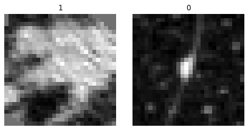
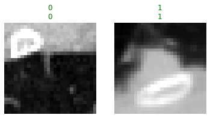
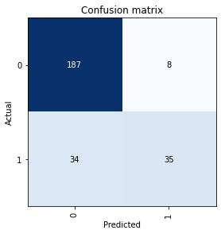
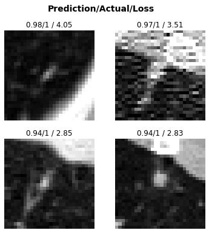
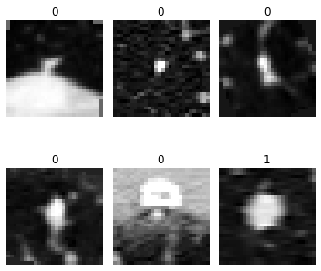
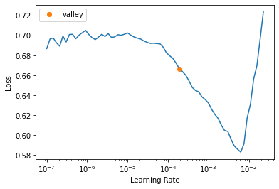
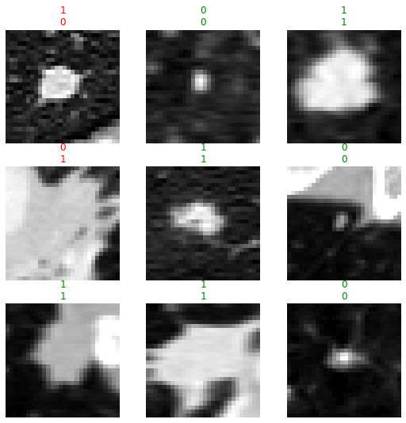

from fastMONAI.vision_all import *Classification

The following line imports all of the functions and classes from the fastMONAI library:
Downloading external data
To demonstrate the use of fastMONAI, we download the NoduleMNIST3D dataset from MedMNIST v2, a dataset containing lung nodules with labels indicating whether the nodules are benign (0) or malignant (1):
df,_ = download_medmnist3d_dataset(study='NoduleMNIST3D', max_workers=2)Inspecting the data
Let’s look at how the processed DataFrame is formatted:
df.head()| img_path | labels | is_val | |
|---|---|---|---|
| 0 | ../data/NoduleMNIST3D/train_images/0_nodule.nii.gz | 0 | False |
| 1 | ../data/NoduleMNIST3D/train_images/1_nodule.nii.gz | 1 | False |
| 2 | ../data/NoduleMNIST3D/train_images/2_nodule.nii.gz | 1 | False |
| 3 | ../data/NoduleMNIST3D/train_images/3_nodule.nii.gz | 0 | False |
| 4 | ../data/NoduleMNIST3D/train_images/4_nodule.nii.gz | 0 | False |
In fastMONAI, various data augmentation techniques are available for training vision models, and they can also optionally be applied during inference. The following code cell specifies a list of transformations to be applied to the items in the training set. The complete list of available transformations in the library can be found at https://fastmonai.no/vision_augment.
item_tfms = [ZNormalization(), PadOrCrop(size=28), RandomAffine(degrees=35, isotropic=True)]Before feeding the data into a model, we must create a DataLoaders object for our dataset. There are several ways to get the data in DataLoaders. In the following line, we call the ImageDataLoaders.from_df factory method, which is the most basic way of building a DataLoaders.
Here, we pass the processed DataFrame, define the columns for the images fn_col and the labels label_col, some transforms item_tfms, voxel spacing resample, and the batch size bs.
dls = MedImageDataLoaders.from_df(df, fn_col='img_path', label_col='labels',
splitter=ColSplitter('is_val'), item_tfms=item_tfms,
resample=1, bs=64)We can now take a look at a batch of images in the training set using show_batch :
dls.show_batch(max_n = 2, anatomical_plane = 2)
We’re now ready to construct a deep learning classification model.
Create and train a 3D deep learning model
We import a classification network from MONAI and configure it based on our task, including defining the input image size, the number of classes to predict, channels, etc.
from monai.networks.nets import Classifier
model = Classifier(in_shape=[1, 28, 28, 28], classes=2,
channels=(8, 16, 32, 64), strides=(2, 2, 2))Then we create a Learner, which is a fastai object that combines the data and our defined model for training.
learn = Learner(dls, model, metrics=accuracy)learn.fit_one_cycle(4)| epoch | train_loss | valid_loss | accuracy | time |
|---|---|---|---|---|
| 0 | 0.574831 | 0.409310 | 0.837121 | 00:04 |
| 1 | 0.477787 | 0.383374 | 0.840909 | 00:03 |
| 2 | 0.408993 | 0.345690 | 0.859848 | 00:03 |
| 3 | 0.365673 | 0.357712 | 0.840909 | 00:03 |
Note: Small random variations are involved in training CNN models. Hence, when running the notebook, you may see different results.
With the model trained, let’s look at some predictions on the validation data. The show_results method plots instances, their target values, and their corresponding predictions from the model.
learn.show_results(max_n=2, anatomical_plane=2)
Model evaluation and interpretation
Let’s look at how often and for what instances our trained model becomes confused while making predictions on the validation data:
interp = ClassificationInterpretation.from_learner(learn)cm = interp.plot_confusion_matrix()
Class imbalance is a common challenge in medical datasets, and it is something we’re facing in our example dataset. When dealing with a classification task on such imbalanced datasets, specific sampling techniques may be necessary. See the Advanced) section for further details.
interp.plot_top_losses(k=4, anatomical_plane=2)
Here are the instances our model was most confused about (in other words, most confident but wrong)
The following line imports only the needed components for our classification task:
from fastai.vision.learner import Learner
from fastai.losses import CrossEntropyLossFlat
from fastai.vision.data import ImageBlock, CategoryBlock
from fastai.data.transforms import ColReader, ColSplitter
from fastai.metrics import accuracy
from fastai.callback.schedule import lr_find
from monai.networks.nets import Classifier
from fastMONAI.vision_augmentation import PadOrCrop, RandomAffine, ZNormalization
from fastMONAI.external_data import download_medmnist3d_dataset
from fastMONAI.dataset_info import MedDataset, get_class_weights
from fastMONAI.vision_core import MedImage
from fastMONAI.vision_data import MedDataBlock
from fastMONAI.utils import store_variablesdf_train_val, df_test = download_medmnist3d_dataset(study='NoduleMNIST3D', max_workers = 8)df_train_val.head(1)| img_path | labels | is_val | |
|---|---|---|---|
| 0 | ../data/NoduleMNIST3D/train_images/0_nodule.nii.gz | 0 | False |
med_dataset = MedDataset(img_list=df_train_val.img_path.tolist(), max_workers=12)data_info_df = med_dataset.summary()data_info_df.head()| dim_0 | dim_1 | dim_2 | voxel_0 | voxel_1 | voxel_2 | orientation | example_path | total | |
|---|---|---|---|---|---|---|---|---|---|
| 0 | 28 | 28 | 28 | 1.0 | 1.0 | 1.0 | RAS+ | ../data/NoduleMNIST3D/train_images/0_nodule.nii.gz | 1323 |
resample, reorder = med_dataset.suggestion()
resample, reorder([1.0, 1.0, 1.0], False)img_size = med_dataset.get_largest_img_size(resample=resample)
img_size[28.0, 28.0, 28.0]bs=64
in_shape = [1, 28, 28, 28]item_tfms = [ZNormalization(), PadOrCrop(size=28), RandomAffine(degrees=35, isotropic=True)]As we mentioned earlier, there are several ways to get the data in DataLoaders. In this section, let’s rebuild using DataBlock. Here we need to define what our input and target should be (MedImage and CategoryBlock for classification), how to get the images and the labels, how to split the data, item transforms that should be applied during training, reorder voxel orientations, and voxel spacing. Take a look at fastai’s documentation for DataBlock for further information: https://docs.fast.ai/data.block.html#DataBlock.
dblock = MedDataBlock(blocks=(ImageBlock(cls=MedImage), CategoryBlock),
splitter=ColSplitter('is_val'),
get_x=ColReader('img_path'),
get_y=ColReader('labels'),
item_tfms=item_tfms,
reorder=reorder,
resample=resample)Now we pass our processed DataFrame and the bath size to create a DataLoaders object.
dls = dblock.dataloaders(df_train_val, bs=bs)
len(dls.train_ds.items), len(dls.valid_ds.items)(1158, 165)dls.show_batch(max_n=6, figsize=(5, 5), anatomical_plane=2)
model = Classifier(in_shape=in_shape, classes=2,
channels=(8, 16, 32, 64), strides=(2, 2, 2))Choosing a loss function
Class imbalance is a common challenge in medical datasets, and it is something we’re facing in our example dataset:
print(df_train_val.labels.value_counts())labels
0 986
1 337
Name: count, dtype: int64There are multiple ways to deal with class imbalance. A straightforward technique is to use balancing weights in the model’s loss function, i.e., penalizing misclassifications for instances belonging to the minority class more heavily than those of the majority class.
train_labels = df_train_val.loc[~df_train_val.is_val]['labels']
class_weights = get_class_weights(train_labels)
print(class_weights)tensor([0.6709, 1.9627])loss_func = CrossEntropyLossFlat(weight=class_weights)learn = Learner(dls, model, loss_func=loss_func, metrics=accuracy)learn.summary()Classifier (Input shape: 64 x 1 x 28 x 28 x 28)
============================================================================
Layer (type) Output Shape Param # Trainable
============================================================================
64 x 8 x 14 x 14 x
Conv3d 224 True
InstanceNorm3d 0 False
PReLU 1 True
Conv3d 1736 True
InstanceNorm3d 0 False
PReLU 1 True
Conv3d 224 True
____________________________________________________________________________
64 x 16 x 7 x 7 x 7
Conv3d 3472 True
InstanceNorm3d 0 False
PReLU 1 True
Conv3d 6928 True
InstanceNorm3d 0 False
PReLU 1 True
Conv3d 3472 True
____________________________________________________________________________
64 x 32 x 4 x 4 x 4
Conv3d 13856 True
InstanceNorm3d 0 False
PReLU 1 True
Conv3d 27680 True
InstanceNorm3d 0 False
PReLU 1 True
Conv3d 13856 True
Reshape
____________________________________________________________________________
64 x 2048
Flatten
____________________________________________________________________________
64 x 2
Linear 4098 True
____________________________________________________________________________
Total params: 75,552
Total trainable params: 75,552
Total non-trainable params: 0
Optimizer used: <function Adam at 0x7f368fbefaf0>
Loss function: FlattenedLoss of CrossEntropyLoss()
Callbacks:
- TrainEvalCallback
- CastToTensor
- Recorder
- ProgressCallbacklr = learn.lr_find()
learn.fit_one_cycle(4, lr.valley)| epoch | train_loss | valid_loss | accuracy | time |
|---|---|---|---|---|
| 0 | 0.631502 | 0.476412 | 0.842424 | 00:03 |
| 1 | 0.552307 | 0.455522 | 0.824242 | 00:03 |
| 2 | 0.505492 | 0.442922 | 0.860606 | 00:03 |
| 3 | 0.474527 | 0.442131 | 0.860606 | 00:03 |
learn.show_results(anatomical_plane=2)
learn.save('model-2')Path('models/model-2.pth')Inference on test data
learn.load('model-2');dls.valid_ds.items = df_testpreds, targs = learn.get_preds();accuracy(preds, targs)TensorBase(0.8194)Test-time augmentation
Test-time augmentation (TTA) is a technique where you apply data augmentation transforms when making predictions to produce average output. In addition to often yielding better performance, the variation in the output of the TTA runs can provide some measure of its robustness and sensitivity to augmentations.
preds, targs = learn.tta();accuracy(preds, targs)TensorBase(0.8387)Export learner
store_variables(pkl_fn='vars.pkl', size=in_shape, reorder=reorder, resample=resample)learn.export('learner.pkl')Make a simple web app
Make a simple web application with Gradio and host it on Hugging Face Spaces.
learn = load_learner('learner.pkl', cpu=True)
_, reorder, resample = load_variables(pkl_fn='vars.pkl')import gradio as gr
gr.Interface(fn=lambda fileobj: gradio_image_classifier(fileobj, learn,
reorder, resample),
inputs=['file'],
outputs=gr.Label(num_top_classes=2),
examples=[df_test.img_path[0], df_test.img_path[200]],
title='Example app').launch()Running on local URL: http://127.0.0.1:7860
To create a public link, set `share=True` in `launch()`.